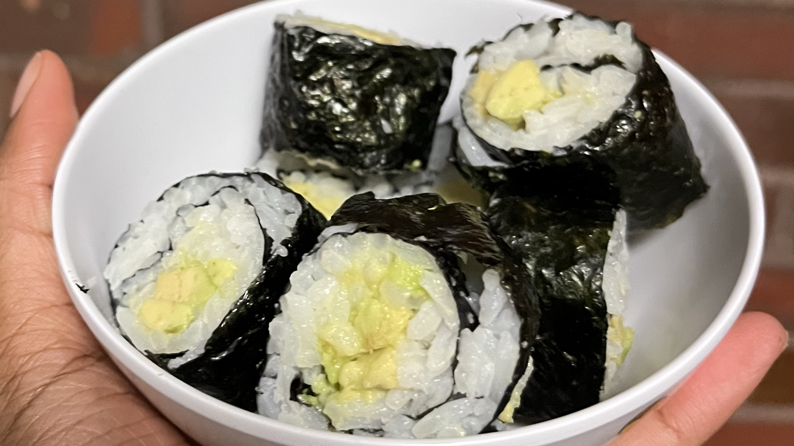

Avocado Rice Rolls
This cannot really be called "sushi" or "kimbap" or anything of the sort. The rice isn't seasoned at all, so it's more like onigiri in roll form. Still, it tastes good. Sometimes I prefer it to actual avocado sushi; sometimes I'd rather have sushi instead.
Ingredients
for 2-3 rolls
Preparation
- Prepare the rice, and let cool.
- Slice the avocado lengthwise.
- If the nori sheet is not square, place the nori so that the longer edge is parallel to you. Spread cooled rice on the sheet in a square, leaving a free edge about an inch wide.
- Place a line of avocado along the center of the rice.
- Roll up the nori. If the free edge doesn't stick, you can wet it with water.
- If you have leftover avocado or rice, continue to make rolls.
- Slice with a sharp knife into equal pieces by cutting the roll in half, then each half into halves, etc.
- Plate and serve with soy sauce, wasabi, and pickled ginger.
Notes
- You can also place a tiny bit of rice along the free edge to make it stick.
- You can make 2-3 rolls depending on how thickly you spread the rice.